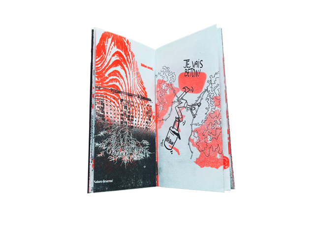
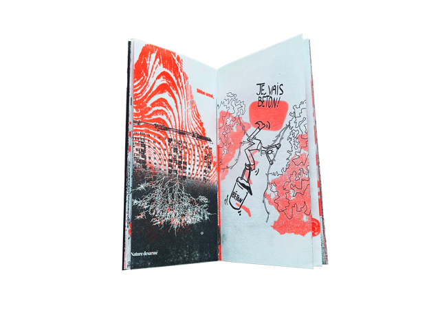

Retour


Réalisation d’un photogramme illustrant un procédé filmique à partir d’une vidéo. J’ai choisi le clip du morceau Hot Wind Blows de Tyler, The Creator. Le clip est filmé avec un caméscope de poche, ce qui créé de nombreuses imperfections visuelles ainsi qu’un rendu flou et pixellisé. Pour mon édition, j’ai décidé de retranscrire cette dégradation numérique sur papier.


 
